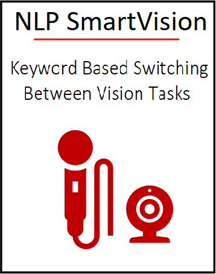

Kria KV260 Vision AI Starter Kit Applications¶
The Kria KV260 Vision AI Starter Kit is the first out-of-the box ready evaluation/development platform in the Xilinx® Kria portfolio of products. The Starter Kit is the platform of choice for development of vision specific target applications. It consists of a non-production K26 SOM plugged into a vision carrier card and equipped with a thermal solution of fan and heatsink. The SOM on the Starter Kit is based on Zynq® UltraScale+™ MPSoC architecture paired with 4 GB of DDR4 memory. The Starter Kit is vision ready as it features multi-camera support through 2x OnSemi Image Access System (IAS) connectors and 1x Raspberry Pi connector. One of the IAS connectors links to a dedicated OnSemi 13 MP AP1302 Image Sensor Processor (ISP), which can handle all image processing functions including interlaced High Dynamic Range (iHDR) operations. Beyond the vision-specific interfaces, there are a host of other interfaces for general purpose development as well. These include flexible I/O connectivity through Ethernet and USB, expandability via Pmod connectors.
Enabled by a growing ecosystem of accelerated applications from the Xilinx App Store, developers of all types can get applications up and running in under 1 hour, with no FPGA experience needed. From there, customization and differentiation can be added via preferred design environments, at any level of abstraction—from application software to AI model to FPGA design.
With both hardware and software development requirements simplified, the KV260 Vision AI Starter Kit is the fastest and easiest platform for application development with the goal of heading towards production volume deployment with the Kria K26 SOMs. The KV260 Vision AI Starter Kit is very accessible and priced at $199, it is a perfect vehicle to leverage during the development phase of your vision applications and further accelerates your time to market.
{kind=link}
KV260 Starter Kit¶
Xilinx Support¶
GitHub issues will be used for tracking requests and bugs. For questions, go to forums.xilinx.com.
License¶
Licensed under the Apache License, Version 2.0 (the “License”); you may not use this file except in compliance with the License.
You may obtain a copy of the License at apache.org/licenses/LICENSE-2.0.
Unless required by applicable law or agreed to in writing, software distributed under the License is distributed on an “AS IS” BASIS, WITHOUT WARRANTIES OR CONDITIONS OF ANY KIND, either express or implied. See the License for the specific language governing permissions and limitations under the License.